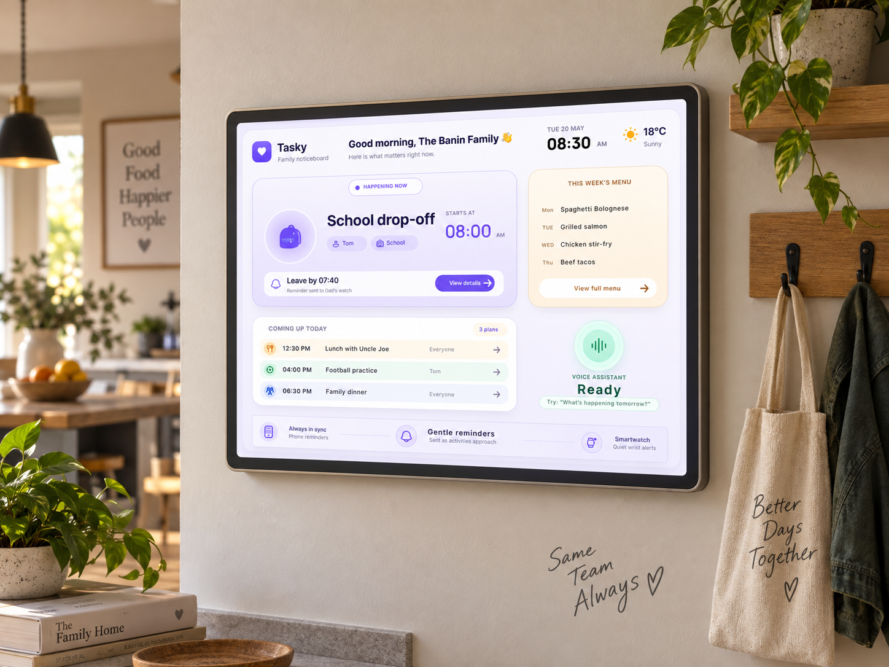

An accessible family coordination experience designed to reduce
mental overload and help households understand what matters now,
what is coming next, and what has changed.
UX Research
Interaction Design
Accessibility
Family Coordination

The Problem
Family organisation wasn’t failing because families lacked calendars.
Plans were already spread across calendars, messages, reminders,
school information, conversations, and memory. The challenge was not
simply scheduling more efficiently — it was reducing the mental effort
of keeping family life together.
The coordination problem
Families needed a way to understand the current state of the home
without repeatedly checking several sources of information.
The useful question was not “Where is our calendar?” but
“What do we actually need to know right now?”
Mental overload
Too much important information depended on someone remembering it.
Plans change quickly
Everyday family coordination constantly changes throughout the day.
Home and work collide
Household responsibilities compete with work, school, meals and routines.
Research
The research challenged my first assumption.
I initially thought families needed a better calendar.
The research reframed the problem around mental load,
visibility, and unexpected changes.
Initial assumption
Families need one better calendar that combines everything.
→
Research insight
Mental load and unexpected changes caused more stress than the
lack of another scheduling tool.
The design problem shifted from organising more information to helping
families understand the right information at the right moment.
System & Audience
A family system has more than one user.
Tasky needed to support people with different responsibilities,
routines, ages, devices, levels of attention and ways of interacting.
01
Parents & guardians
Need a quick overview of what requires attention without carrying
the entire household plan in memory.
02
Children & family members
Need clear information about their own routines and responsibilities
without navigating complex planning systems.
03
Different access needs
The experience needed to support different levels of attention,
digital confidence, motor ability and preferred interaction mode.
Reframing the Solution
The solution didn’t need to become a better calendar.
I needed a way to keep family responsibilities visible without asking
people to constantly open another app, search for information, or
remember what changed.
One calendar for everything
A traditional scheduling model focused on collecting every event,
reminder and responsibility into one place.
→
A shared family noticeboard
A persistent home-centred surface focused on what matters now,
what is coming next and what needs attention.
Exploring the Concept
Exploring how family information should appear at home
I explored different ways of balancing shared visibility,
calm information hierarchy and everyday family coordination.
Product Strategy
Turning the concept into a focused product
I refined the idea around a small set of priorities that help families
stay coordinated without turning the product into another task-heavy
planning system.
Focus
What matters now
Surface the most relevant current activity instead of presenting
everything with equal visual weight.
Rhythm
Everyday coordination
Support the real rhythm of family life: routines, meals, reminders,
school activities and last-minute changes.
Measure
Is Tasky helping?
The product should reduce searching, remembering and repeated
coordination rather than simply add more features.
Core User Flow
Designing around everyday moments
Instead of requiring deep navigation, the core experience focuses on
helping a family member notice what matters, understand the context,
act quickly and remain in sync.
Voice Interaction
Making voice feel like part of the home
Voice provides an alternative interaction path when someone is cooking,
carrying something, getting children ready, or simply does not want to
stop and navigate a screen.
Final Solution
A shared family noticeboard built around what matters now
The final interface combines the family’s most immediate activity,
upcoming plans, meals, reminders and voice support into one persistent
home surface.
The dashboard prioritises what is happening now while still giving
the family enough context about what is coming next. Voice,
phone reminders and smartwatch alerts extend Tasky beyond the wall
display when the family is moving through the day.
Accessibility
Designing for different ways of seeing, understanding and interacting
Accessibility was considered as part of the coordination model itself,
not simply as a visual compliance step.
1
Readable from a distance
Large headings, clear hierarchy, generous spacing and strong
contrast support a noticeboard that may be viewed while standing
several steps away.
2
More than one interaction path
Important information can be accessed visually or through voice.
Tasky does not depend on voice alone, supporting different abilities,
environments and preferences.
3
Reduced cognitive overload
Prioritising “what matters now” avoids presenting every family task
with equal importance and reduces the effort needed to decide where
to focus.
Reflection
Designing for coordination meant designing for attention
What changed
The project moved from the idea of improving a family calendar to
designing a shared information environment. That reframing changed
what information deserved prominence and how people should interact
with it.
What Tasky taught me
Reducing cognitive load is not about removing information —
it is about giving information the right priority at the right moment.
The final concept became calmer by designing around visibility,
hierarchy, alternate interaction paths and the changing rhythm
of family life.
Interested in thoughtful, accessible product design?
Let’s connect to discuss UX research, interaction design,
accessibility and human-centred product work.